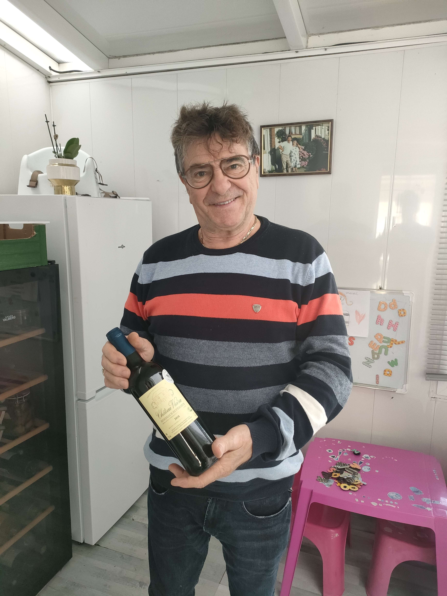
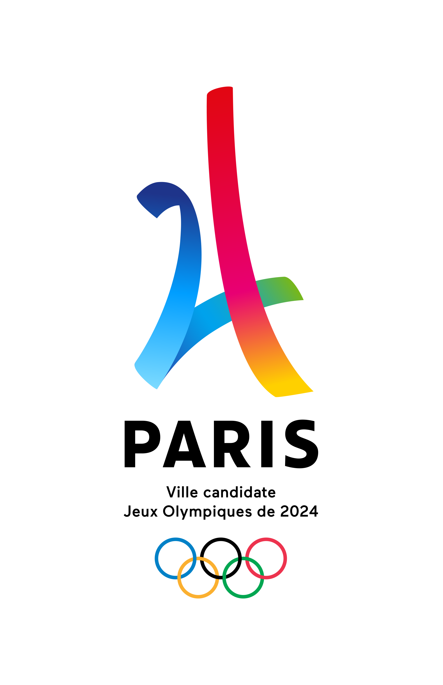

Nos Collaborateurs.
Chez nous on mange locale
Nous sommes en partenariat avec divers élèveurs et producteurs du département

Guillaume
Agriculteur situé à quaëdypre

François
Brasseur situé à Lievin
François
Brasseur situé à Lievin
Le departement du Nord
NO
La Goudale

Afin de vous proposer une grande quantité de Boissons Chtites. Notre Partenaires La Goudale vous propose une grande variétée de Boissons disponible des à presents dans notre réstaurant.
Partenaire JO 2024
Dans le But de promouvoir la gastronomie Française durant l'évenement des JO 2024 de PARIS. La Ch'tite Mamie a été choisi afin de représenté la Gastronomie Nordiste durant l'évenement.